srec_ti_tagged - Texas Instruments Tagged (SDSMAC) file format
This format is also known as the TI-Tagged or TI-SDSMAC format.
This format allows binary files to be uploaded and downloaded between two computer systems, typically between a computer system (such as a PC, Macintosh, or workstation) and an emulator or evaluation board for microcontrollers and microprocessors.
The
Lines
Unlike many other object formats, the lines themselves are
not especially significant. The format consits of a number
of tagged fields, and lines are composed of a series
of these fields.
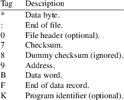
Data Byte
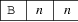
One byte of data. The nn is 8-bit big-endian hexadecimal.
End of File
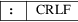
The end of data is indicated by this tag. The end of line sequence (LF on Unix systems, CRLF on PCs) follows this tag.
File Header
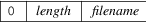
The optional start-of-file record begins with a tag character (’0’) and a 12-character file header. The first four characters are the byte count of the file data. The remaining 8 characters are the name of the file and may be any ASCII characters, blank padded.
Checksum
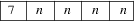
The checksum is the 2s complement sum of the 8-bit ASCII values of characters, beginning with the first tag character and ending with the checksum tag character (7). The nnnn is 16-bit big-endian hexadecimal.
Dummy Checksum
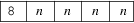
The checksum is the 2s complement sum of the 8-bit ASCII values of characters, beginning with the first tag character and ending with the checksum tag character (8). The nnnn is 16-bit big-endian hexadecimal.
Address
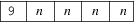
Addresses may be given for any data byte, but none is mandatory. The file begins at 0000 if no address is given before the first data field. The nnnn is 16-bit big-endian hexadecimal.
Data Word
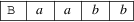
Two bytes of data. The aa and bb are each 8-bit big-endian hexadecimal.
End of Record
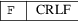
The end of line sequence (LF on Unix systems, CRLF on PCs) is escaped using this tag. The checksum is reset to zero at this point.
Program Identifier
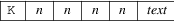
The program identifier can contain a brief description of the program, or can be empty (i.e. the text portion is optional). The nnnn length (hex) of the field includes the ’K’, the length and the text; it is at least 5.
Size
Multiplier
In general, binary data will expand in sized by
approximately 2.9 times when represented with this
format.
Here is an example TI-Tagged file. It contains the data “Hello, World[rq] to be loaded at address 0x0100.
K000590080B4865B6C6CB6F2CB2057B6F72B6C64*0A7F648F
:
and here is another example from the reference below
00050 7FDD4F
90000BFFFFBFFFFBFFFFBFFFFBFFFFBFFFFBFFFFBFFFF7F400F
90010BFFFFBFFFFBFFFFBFFFFBFFFFBFFFFBFFFFBFFFF7F3FFF
90020BFFFFBFFFFBFFFFBFFFFBFFFFBFFFFBFFFFBFFFF7F3FEF
90030BFFFFBFFFFBFFFFBFFFFBFFFFBFFFFBFFFFBFFFF7F3FDF
90040BFFFFBFFFFBFFFFBFFFFBFFFFBFFFFBFFFFBFFFF7F3FCF
:
http://www.dataio.com/pdf/Manuals/Unifamily/981-0014-016.pdf (page 6-33)
srec_cat
version 1.65
Copyright (C) 1998, 1999, 2000, 2001, 2002, 2003, 2004,
2005, 2006, 2007, 2008, 2009, 2010, 2011, 2012, 2013, 2014,
2018, 2019, 2022 Peter Miller
The srec_cat program comes with ABSOLUTELY NO WARRANTY; for details use the ’srec_cat -VERSion License’ command. This is free software and you are welcome to redistribute it under certain conditions; for details use the ’srec_cat -VERSion License’ command.
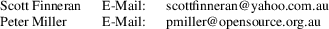